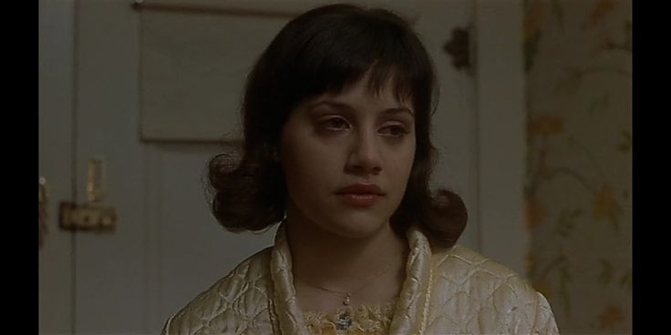
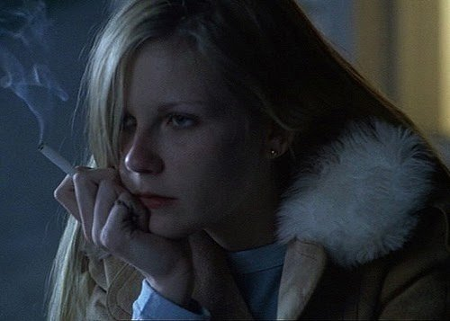

¿Qué es?
La tristeza es una emoción humana natural y universal que se experimenta en respuesta a situaciones o eventos que percibimos como dolorosos, desagradables, o que nos causan una sensación de pérdida. Es una emoción compleja que puede manifestarse de diversas formas y grados de intensidad, y puede variar en duración.
¿Qué hago si me siento triste?
Permítete sentir: Es importante recordar que está bien sentir tristeza. No reprimas tus emociones ni te sientas culpable por estar triste. Acepta tus sentimientos como una parte natural de la experiencia humana.
Comunica tus sentimientos: Hablar sobre lo que te está causando tristeza puede ser muy beneficioso. Comparte tus sentimientos con amigos cercanos o familiares en quienes confíes. A veces, simplemente expresar lo que sientes puede aliviar la carga emocional.
Practica el autocuidado: Dedica tiempo a cuidarte a ti mismo. Esto puede incluir actividades como tomar un baño relajante, leer un libro que te guste, practicar la meditación o el yoga, o simplemente descansar. Hacer cosas que te hagan sentir bien contigo mismo puede elevar tu estado de ánimo.
Mantén una rutina: Cuando te sientes triste, es fácil descuidar tu rutina diaria. Sin embargo, mantener una estructura y realizar actividades cotidianas puede ayudarte a sentirte más en control y a evitar el aislamiento.
Busca apoyo profesional: Si tu tristeza persiste o es abrumadora, considera hablar con un terapeuta o consejero. La ayuda profesional puede proporcionarte herramientas y estrategias para abordar tus sentimientos de manera efectiva.

